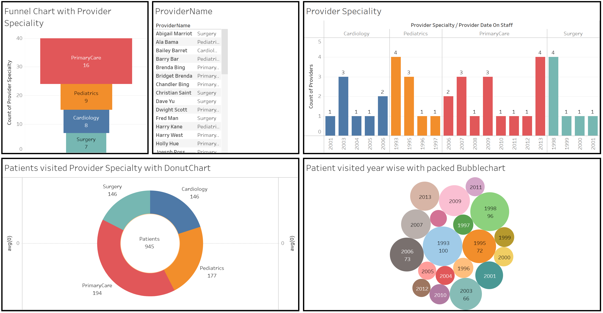
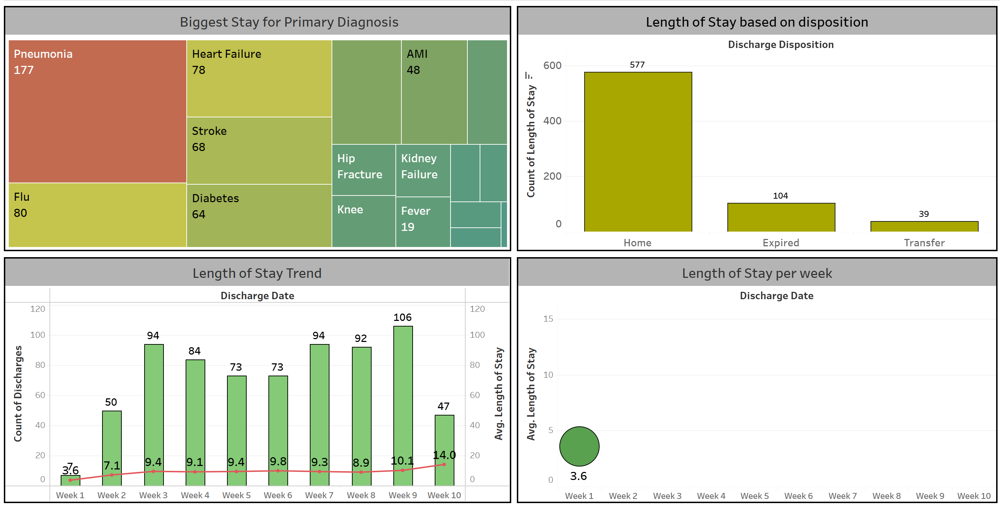
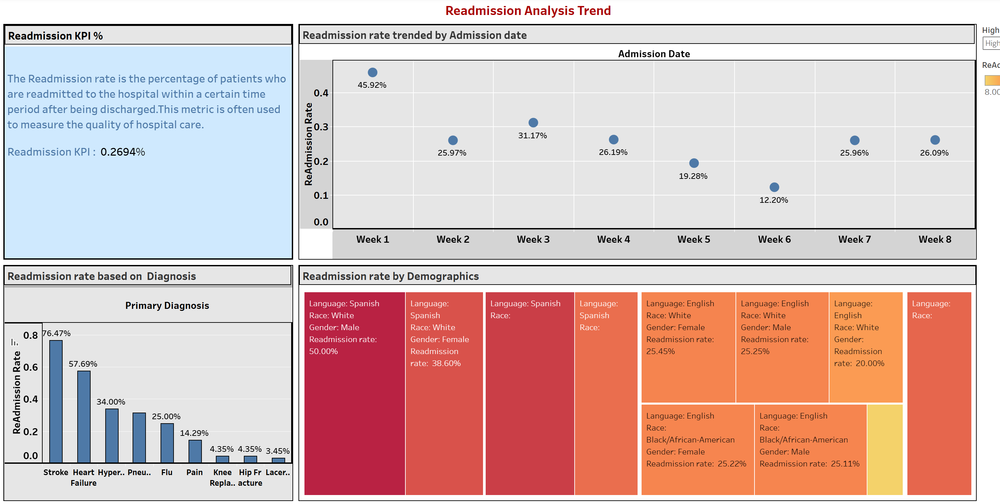
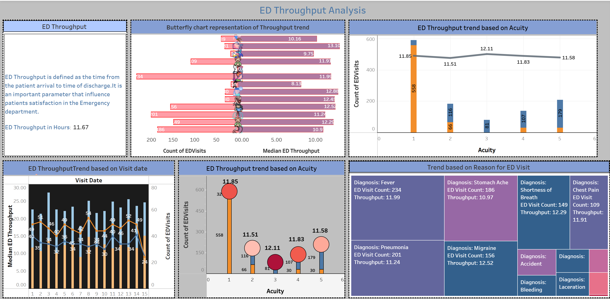
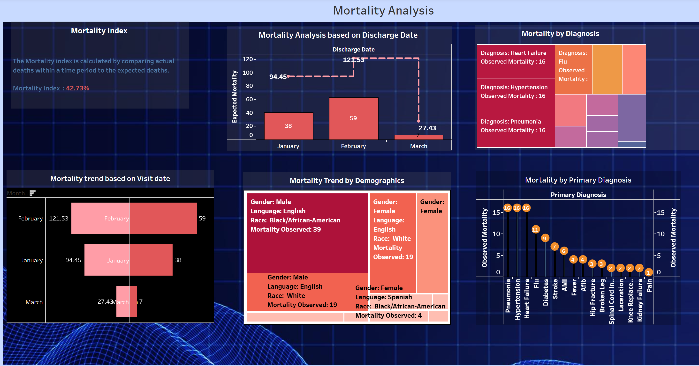
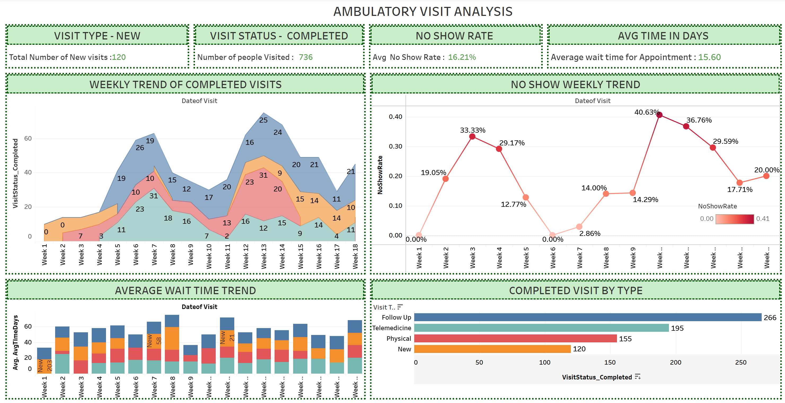
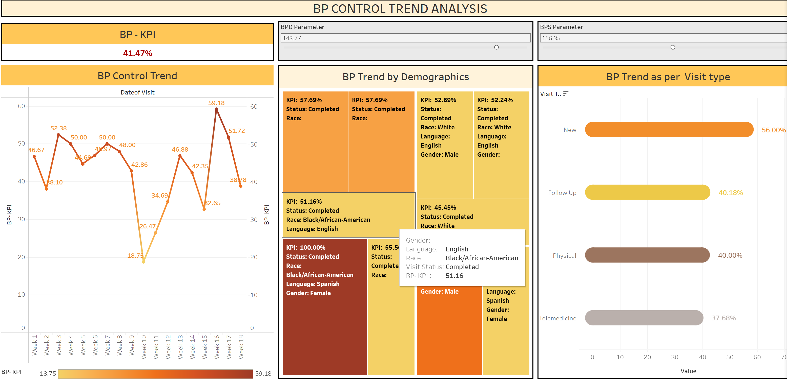

A multi-dashboard Tableau analysis of hospital Quality Data and Readmission Registry datasets, built to surface insights across provider specialties, length of stay, readmissions, ED throughput, mortality, ambulatory care, and blood pressure control — supporting data-driven improvements in patient care and operational efficiency.







This analysis followed a three-phase framework: Tableau for initial data exploration, chart building, table joins, and date/null-value handling; Python (NumPy, Pandas, Matplotlib, Seaborn) for deeper exploratory analysis, pair plots, ICU length-of-stay and mortality investigation, and patient demographic stratification; and SQL for data validation, integrity checks, ERD-based database design, and automated triggers — confirming findings across all three tools before drawing conclusions.